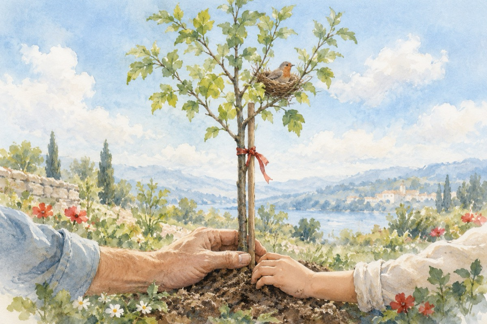

Băiatul meu
Pentru băiatul meu Cristi Groza, la 50 de ani.
Anii trec, bătu-i-ar vina
Și se cuibăresc în pom
Te întrebi, care-i pricina?
Ești cuvântător, ești om!...
Tu-l socoți, el te socoate
Anul este nemilos
Negreșit își face parte
Calendaru-i tot mai gros!...
Astăzi când a întors fila
Fila timpului trecut
Bucuria și nu mila
Ai aflat că te-ai născut!
Socoți fără-a fi greșit
Te-ai găsit la cifra 2 cu roșu încercuit
Doamne, atunci m-am NĂSCUT!
Cinci decenii de lumină, în ele m-am regăsit!
DOMNUL fie lăudat și iubit
Am trăit, trăiesc în pace
În grădina ,,LUI”, noi un pom am răsădit
DAVID, ce din zi în zi, tot mai mare el se face!
Și acum în prag de an, ce-am ajuns cu bucurie
Mulțumesc lui DUMNEZEU cu smerenie
Și îl rog, ca în casa mea, pacea să DOMINE
Și-n întreaga omenire!
La anul și la mulți ani!
Vasile Groza
Apare și în: Privește-mă în ochi (2019).